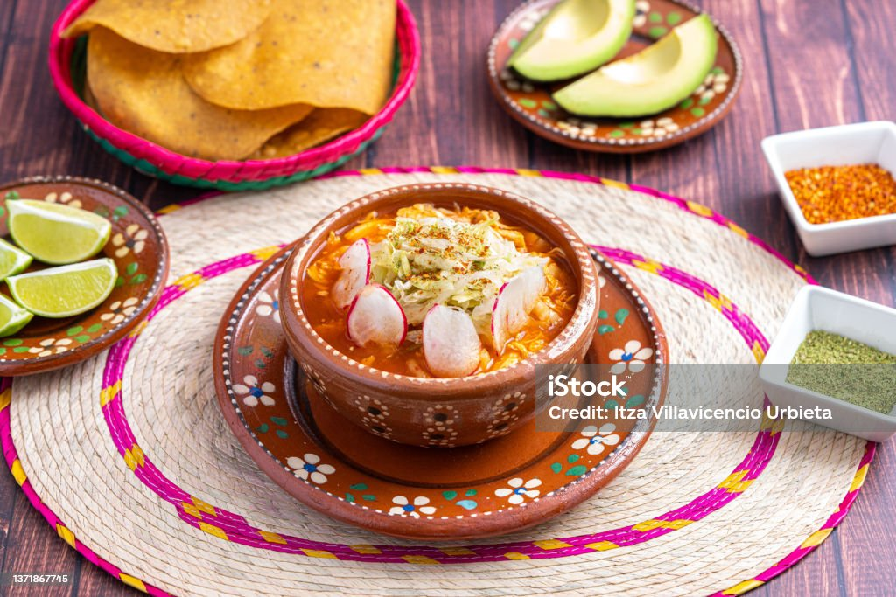

Pozole is a pre-colonal dish from Mexico. It dates back all the way back to 1325-1524. At fist, it was made from the human meat of prisoners who had their hearts torn out during ritual sacrifices. Fortunately, after the spanish conquest in the 1500s, cannibilism was banned and the meat used was instead pork.
This recipe creates a hearty soup, on a foundation of hominy and pork or chicken, flavored with a homemade red chile or green chile sauce and garnished with shredded cabbage and chopped radishes or onions.
Ingredeients
4 ounces dried guajillo or ancho chiles, or a combination of both Salt
1 large (108 ounce, 6 lb 12 oz, 3 kg) can white hominy, drained and rinsed
3 pounds pork shoulder (preferably with bone), cut into 1 to 1 1/2 inch cubes (can also use pork shanks), make sure to use a cut well marbled with fat
2 tablespoons dry oregano (Mexican oregano if available)
Garnishes
1/2 small cabbage, thinly sliced
1 bunch cilantro, chopped
1/2 white onion, chopped
4 limes, quartered
1 bunch red radishes, sliced thin
12 to 24 tostada shells
Directions
Boil 5 quarts water
Heat the chiles, cover with 3 cups hot water
Brown the pork, add garlic
Add the pork and spices to large pot of boiling water
Prepare the red sauce
Add the red chili sauce to the pot with the pork and hominy
Cook for 2 to 3 hours until the pork is completely tender
Assemble the garnishes

Video:
Sources:
Itza Villavicencio Urbieta. Traditional mexican food. Red pozole soup with chicken accompanied with avocado, lettuce, onion, radish, lemon, chili and crispy corn tortillas also known as tostadas on a wooden background. stock photo. March 06, 2022.